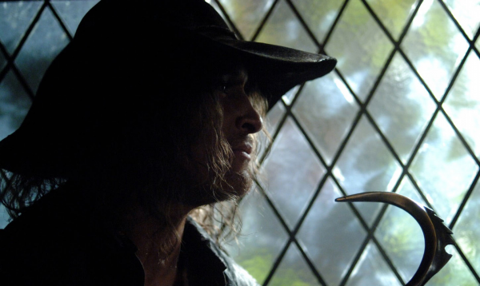

Человек с крюком в «Сверхъестественном»

Человек с металлическим крюком вместо руки – это пугающий герой многих фильмов ужасов или мистических историй. Сценаристы сериала «Сверхъестественое» тоже решили не упускать возможности создать свой образ призрака-убийцы. Так с самого начала сериала выходит серия «Человек с крюком» под номером 7.
В начале серии показывают девушку Лори, которая собирается на свидание со своим молодым человеком. Уединившись под мостом, парочка даже не догадывается, что здесь их уже поджидает страшный призрак. Заподозрить неладное молодым людям приходится после страшного скрежета. Человек с крюком начинает подступать к влюбленной парочке и по пути царапает своим оружием дорожные знаки и ограждения. Парень Рич выходит из машины, чтобы проверить все ли в порядке. В это время нечто подходит к автомобилю все ближе и ближе. Появляются царапины на самой машине, прокалываются шины. Девушка сперва блокирует двери, а после, когда кажется, что все стало затихать, она выходит из машины и видит мертвого Рича. Труп парня Лори уже висит над машиной.
Страшная гибель молодого человека становится главной на всех газетных полосах. Так о случившемся узнают и братья Винчестеры. Инициатором того, чтобы отправиться в Айову на место происшествия становится Дин, и они вместе с Сэмом едут проводить свое расследование. Приняв решение действовать скрытно, Винчестеры выдают на месте прибытия себя за двух студентов.
Так они оказываются заселенными в студенческое общежитие вместе с еще одним учащимся – Морфом. Он естественно знал о гибели Рич, и выложил своим новым соседям всю информацию, как на тарелочке. Сэм и Дин узнают, что девушка Лори, которая была с парнем в тот вечер, дочь местного священника. И братья решают отправиться прямиком в церковь.
В тот момент, когда Винчестеры приезжают к местной церквушке, идет служба, где Соренсен – священник и отец Лори рассказывает о Ричи и его страшной гибели. Сэм сочувствует девушке погибшего и заводит с ней беседу. Ему удалось услышать от Лори подробный рассказ о случившемся, из чего Дин и Сэм делают вывод, что столкнулись с призраком человека-крюка. Чтобы узнать детальную информацию о призраке-убийце братья отправляются в библиотеку. Где выясняется связь между убийствами и некогда жившем в этом городе священником Джейкобом Карнсе. Оказывается, что священник этот слыл большим праведником. В свое время он убил 13 женщин, зарабатывающих себе на жизнь определенного рода услугами. И именно серебряным крюком, который продолжает убивать невинных людей и по сей день. Джейкоб был за это арестован, после чего казнен и захоронен в неизвестной могиле.
Решив вооружиться как следует, Винчестеры заряжают ружья солью и подготавливают прочий арсенал для поимки призрачного убийцы. Все это происходит в том самом месте, где погиб Рич и где старый священник лишал жизней женщин легкого поведения. Однако вместо успешной охоты, братьев арестовывают и отвозят в учаток полиции.
В это время Лори, вернувшаяся в общежитие, заходит в свою комнату, где уже спит соседка. Девушка решила не мешать ей и не стала включать свет. На утро же Лори стала свидетельницей еще одной страшной смерти. Ее подруга и соседка по комнате лежала в своей кровати мертвой, а рядом кровью была выведена надпись «Ты рада, что не включила свет»?
Так на следующий день, когда Сэма и Дина выпускают из участка, они видят, что полицейские встревожены каким-то событием и направляются на место происшествия. Винчестеры решают следовать за ними и оказываются в общежитии, где погибла девушка-студентка. Братья весьма удивлены при виде на месте событий Лори. Снова дочь священника оказывается рядом с крюком убийцы, но все же ей удается уцелеть. Сэм и Дин приходят к выводу, что жертвы окружают Лору неспроста. Что именно к ней пытается подобраться призрак убийца. Сэм остается рядом с дочерью священника, а Дин в это время решает отыскать могилу Джейкоба, чтобы сжечь его останки.
В это время Сэм беседуя с Лори на улице, видит, как за спиной Соренса – ее отца, показывается убийца со своим крюком. Он пытается утащить священника в дом, но Винчестер младший успевает выстрелить солью и спасти жизнь отца Лори.
Братья встречаются в больнице, куда отвезли Соренса. Сопоставив все факты, они понимают, что сожжённые останки старого священника не дали ожидаемых результатов. Значит, Джейкоба на земле держат не они, а его серебряный крюк.
После изучения архивов по делу праведного убийцы братья выясняют, что после казни серебряный крюк был передан на нужды церкви. Не откладывая на потом полученную информацию, Винчестеры отправляются прямиком в священную обитель и пытаются уничтожить все имеющееся в ней серебро. Человек с крюком пытается помешать им сделать задуманное и нападает на Лори и Винчестеров. Только благодаря случайной догадке о том, что часть серебра с крюка призрака досталась и юной девушке, чей крестик был вылит из него, помогает братьям-охотникам расправиться с призраком.
Большое внимание в этой серии уделялось звуковому оформлению – музыке и характерным звукам. Режиссеры приложили максимум стараний, чтобы серия смотрелась еще более загадочной, мистической и ужасающей.